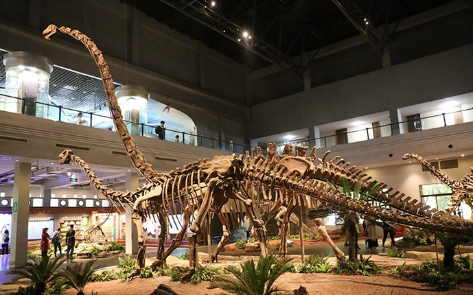

Toggle navigation
国家
一级博物馆
首页
中国地图
占地面积
四川博物馆
开闭馆时间
四川一级博物馆
四川省博物馆
1941年创建
四川省建川博物馆
2005年创建
朱德同志故居纪念馆
1982年创建
邓小平故居陈列馆
2004年创建
广汉三星堆博物馆
1997年创建

自贡恐龙博物馆
1987年创建
5.12汶川特大地震纪念馆
2008年创建
成都博物馆
1958年创建
成都武侯祠博物馆
1984年创建
成都杜甫草堂博物馆
1955年创建
成都金沙遗址博物馆
2007年创建
自贡盐业历史博物馆
1959年创建